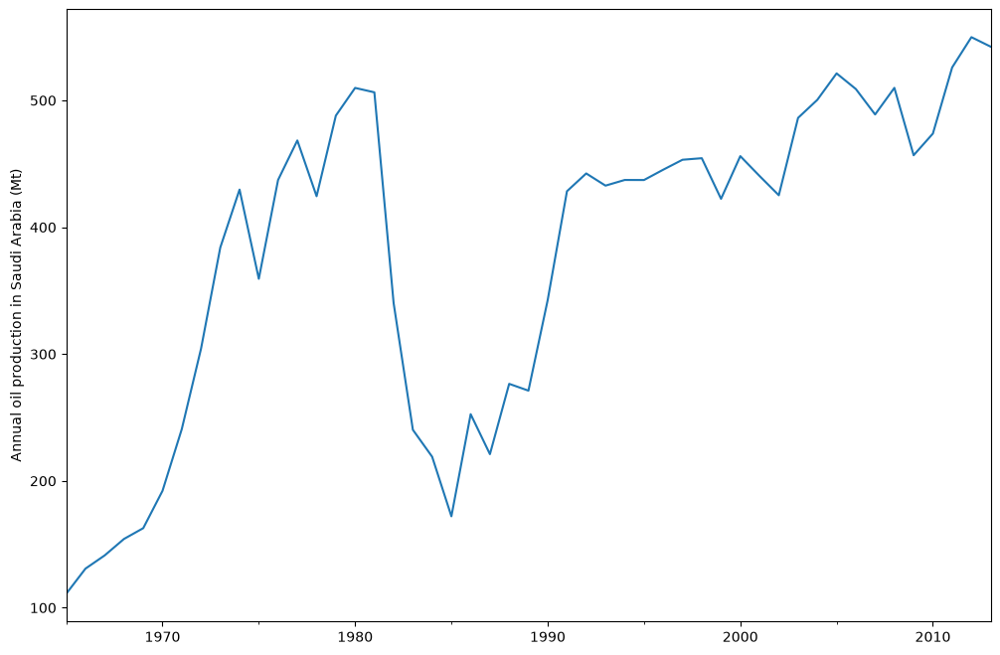
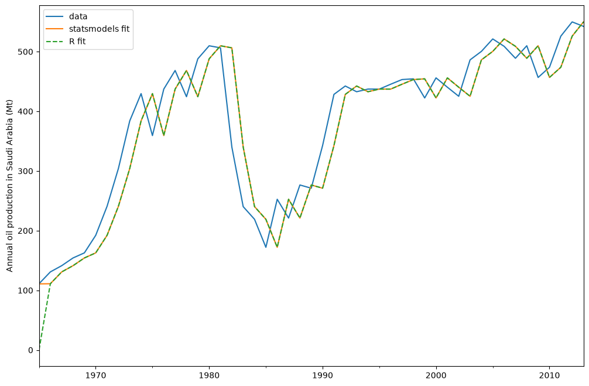
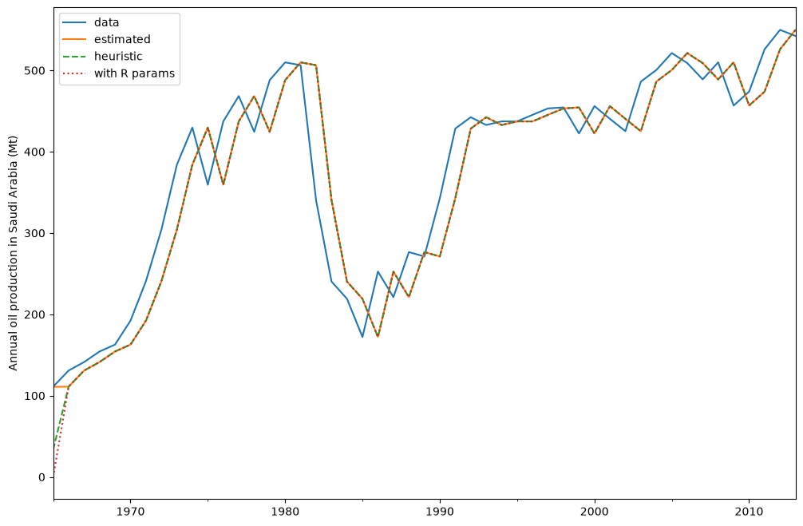
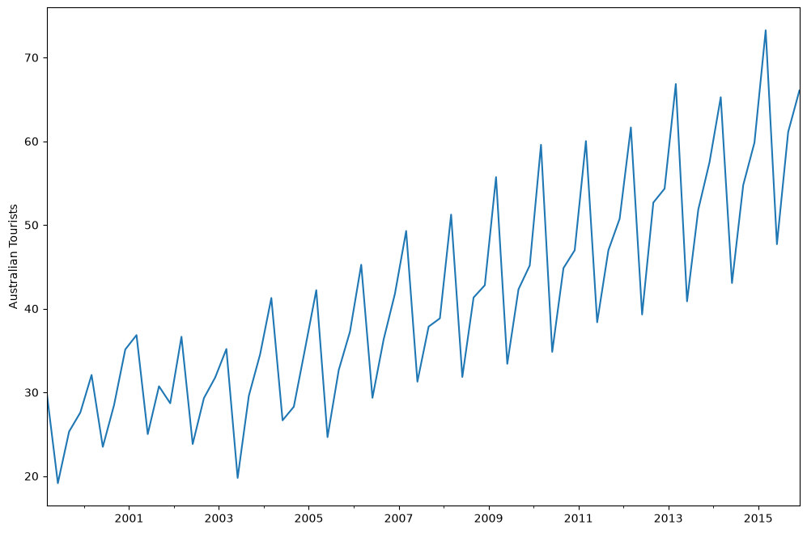
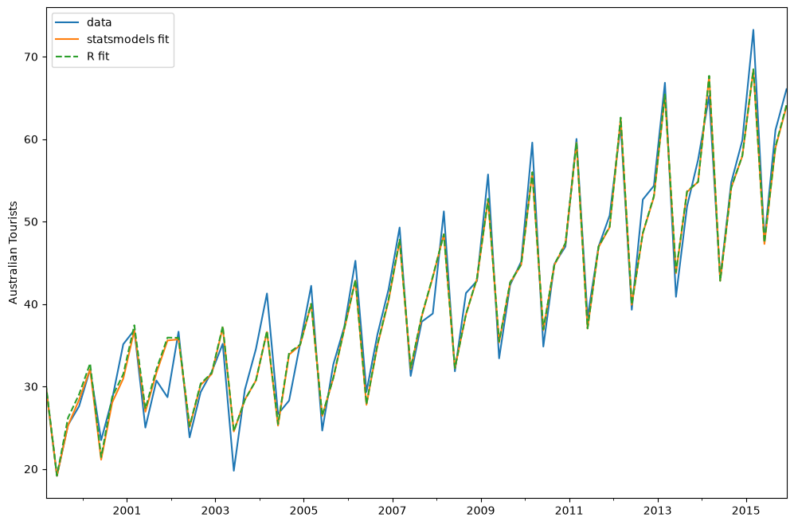
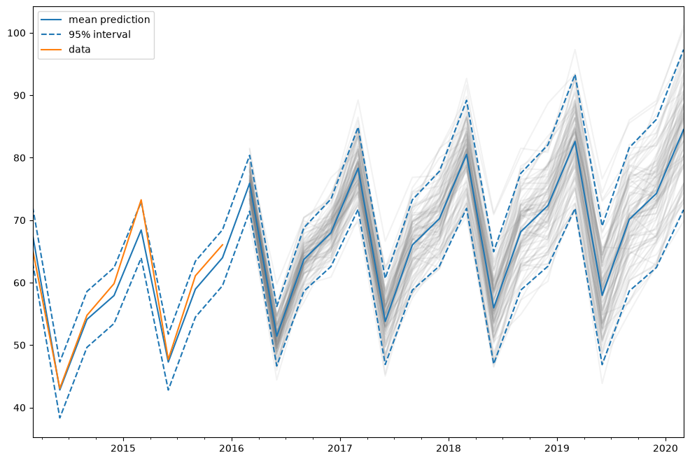

ETS models#
The ETS models are a family of time series models with an underlying state space model consisting of a level component, a trend component (T), a seasonal component (S), and an error term (E).
This notebook shows how they can be used with statsmodels. For a more thorough treatment we refer to [1], chapter 8 (free online resource), on which the implementation in statsmodels and the examples used in this notebook are based.
statsmodels implements all combinations of:
additive and multiplicative error model
additive and multiplicative trend, possibly dampened
additive and multiplicative seasonality
However, not all of these methods are stable. Refer to [1] and references therein for more info about model stability.
[1] Hyndman, Rob J., and Athanasopoulos, George. Forecasting: principles and practice, 3rd edition, OTexts, 2021. https://otexts.com/fpp3/expsmooth.html
[1]:
import matplotlib.pyplot as plt
import pandas as pd
%matplotlib inline
from statsmodels.tsa.exponential_smoothing.ets import ETSModel
[2]:
plt.rcParams["figure.figsize"] = (12, 8)
Simple exponential smoothing#
The simplest of the ETS models is also known as simple exponential smoothing. In ETS terms, it corresponds to the (A, N, N) model, that is, a model with additive errors, no trend, and no seasonality. The state space formulation of Holt’s method is:
\begin{align} y_{t} &= y_{t-1} + e_t\\ l_{t} &= l_{t-1} + \alpha e_t\\ \end{align}
This state space formulation can be turned into a different formulation, a forecast and a smoothing equation (as can be done with all ETS models):
\begin{align} \hat{y}_{t|t-1} &= l_{t-1}\\ l_{t} &= \alpha y_{t-1} + (1 - \alpha) l_{t-1} \end{align}
Here, \(\hat{y}_{t|t-1}\) is the forecast/expectation of \(y_t\) given the information of the previous step. In the simple exponential smoothing model, the forecast corresponds to the previous level. The second equation (smoothing equation) calculates the next level as weighted average of the previous level and the previous observation.
[3]:
oildata = [
111.0091,
130.8284,
141.2871,
154.2278,
162.7409,
192.1665,
240.7997,
304.2174,
384.0046,
429.6622,
359.3169,
437.2519,
468.4008,
424.4353,
487.9794,
509.8284,
506.3473,
340.1842,
240.2589,
219.0328,
172.0747,
252.5901,
221.0711,
276.5188,
271.1480,
342.6186,
428.3558,
442.3946,
432.7851,
437.2497,
437.2092,
445.3641,
453.1950,
454.4096,
422.3789,
456.0371,
440.3866,
425.1944,
486.2052,
500.4291,
521.2759,
508.9476,
488.8889,
509.8706,
456.7229,
473.8166,
525.9509,
549.8338,
542.3405,
]
oil = pd.Series(oildata, index=pd.date_range("1965", "2013", freq="YS"))
oil.plot()
plt.ylabel("Annual oil production in Saudi Arabia (Mt)")
[3]:
Text(0, 0.5, 'Annual oil production in Saudi Arabia (Mt)')

The plot above shows annual oil production in Saudi Arabia in million tonnes. The data are taken from the R package fpp2 (companion package to prior version [1]). Below you can see how to fit a simple exponential smoothing model using statsmodels’s ETS implementation to this data. Additionally, the fit using forecast in R is shown as comparison.
[4]:
model = ETSModel(oil)
fit = model.fit(maxiter=10000)
oil.plot(label="data")
fit.fittedvalues.plot(label="statsmodels fit")
plt.ylabel("Annual oil production in Saudi Arabia (Mt)")
# obtained from R
params_R = [0.99989969, 0.11888177503085334, 0.80000197, 36.46466837, 34.72584983]
yhat = model.smooth(params_R).fittedvalues
yhat.plot(label="R fit", linestyle="--")
plt.legend()
[4]:
<matplotlib.legend.Legend at 0x7f2647970050>

By default the initial states are considered to be fitting parameters and are estimated by maximizing log-likelihood. It is possible to only use a heuristic for the initial values:
[5]:
model_heuristic = ETSModel(oil, initialization_method="heuristic")
fit_heuristic = model_heuristic.fit()
oil.plot(label="data")
fit.fittedvalues.plot(label="estimated")
fit_heuristic.fittedvalues.plot(label="heuristic", linestyle="--")
plt.ylabel("Annual oil production in Saudi Arabia (Mt)")
# obtained from R
params = [0.99989969, 0.11888177503085334, 0.80000197, 36.46466837, 34.72584983]
yhat = model.smooth(params).fittedvalues
yhat.plot(label="with R params", linestyle=":")
plt.legend()
[5]:
<matplotlib.legend.Legend at 0x7f2647883b60>

The fitted parameters and some other measures are shown using fit.summary(). Here we can see that the log-likelihood of the model using fitted initial states is fractionally lower than the one using a heuristic for the initial states.
[6]:
print(fit.summary())
ETS Results
==============================================================================
Dep. Variable: y No. Observations: 49
Model: ETS(ANN) Log Likelihood -259.257
Date: Wed, 01 Jul 2026 AIC 524.514
Time: 12:22:41 BIC 530.189
Sample: 01-01-1965 HQIC 526.667
- 01-01-2013 Scale 2307.767
Covariance Type: approx
===================================================================================
coef std err z P>|z| [0.025 0.975]
-----------------------------------------------------------------------------------
smoothing_level 0.9999 0.132 7.551 0.000 0.740 1.259
initial_level 110.7864 48.110 2.303 0.021 16.492 205.081
===================================================================================
Ljung-Box (Q): 1.87 Jarque-Bera (JB): 20.78
Prob(Q): 0.39 Prob(JB): 0.00
Heteroskedasticity (H): 0.49 Skew: -1.04
Prob(H) (two-sided): 0.16 Kurtosis: 5.42
===================================================================================
Warnings:
[1] Covariance matrix calculated using numerical (complex-step) differentiation.
[7]:
print(fit_heuristic.summary())
ETS Results
==============================================================================
Dep. Variable: y No. Observations: 49
Model: ETS(ANN) Log Likelihood -260.521
Date: Wed, 01 Jul 2026 AIC 525.042
Time: 12:22:41 BIC 528.826
Sample: 01-01-1965 HQIC 526.477
- 01-01-2013 Scale 2429.964
Covariance Type: approx
===================================================================================
coef std err z P>|z| [0.025 0.975]
-----------------------------------------------------------------------------------
smoothing_level 0.9999 0.132 7.559 0.000 0.741 1.259
==============================================
initialization method: heuristic
----------------------------------------------
initial_level 33.6309
===================================================================================
Ljung-Box (Q): 1.85 Jarque-Bera (JB): 18.42
Prob(Q): 0.40 Prob(JB): 0.00
Heteroskedasticity (H): 0.44 Skew: -1.02
Prob(H) (two-sided): 0.11 Kurtosis: 5.21
===================================================================================
Warnings:
[1] Covariance matrix calculated using numerical (complex-step) differentiation.
Holt-Winters’ seasonal method#
The exponential smoothing method can be modified to incorporate a trend and a seasonal component. In the additive Holt-Winters’ method, the seasonal component is added to the rest. This model corresponds to the ETS(A, A, A) model, and has the following state space formulation:
\begin{align} y_t &= l_{t-1} + b_{t-1} + s_{t-m} + e_t\\ l_{t} &= l_{t-1} + b_{t-1} + \alpha e_t\\ b_{t} &= b_{t-1} + \beta e_t\\ s_{t} &= s_{t-m} + \gamma e_t \end{align}
[8]:
austourists_data = [
30.05251300,
19.14849600,
25.31769200,
27.59143700,
32.07645600,
23.48796100,
28.47594000,
35.12375300,
36.83848500,
25.00701700,
30.72223000,
28.69375900,
36.64098600,
23.82460900,
29.31168300,
31.77030900,
35.17787700,
19.77524400,
29.60175000,
34.53884200,
41.27359900,
26.65586200,
28.27985900,
35.19115300,
42.20566386,
24.64917133,
32.66733514,
37.25735401,
45.24246027,
29.35048127,
36.34420728,
41.78208136,
49.27659843,
31.27540139,
37.85062549,
38.83704413,
51.23690034,
31.83855162,
41.32342126,
42.79900337,
55.70835836,
33.40714492,
42.31663797,
45.15712257,
59.57607996,
34.83733016,
44.84168072,
46.97124960,
60.01903094,
38.37117851,
46.97586413,
50.73379646,
61.64687319,
39.29956937,
52.67120908,
54.33231689,
66.83435838,
40.87118847,
51.82853579,
57.49190993,
65.25146985,
43.06120822,
54.76075713,
59.83447494,
73.25702747,
47.69662373,
61.09776802,
66.05576122,
]
index = pd.date_range("1999-03-01", "2015-12-01", freq="3MS")
austourists = pd.Series(austourists_data, index=index)
austourists.plot()
plt.ylabel("Australian Tourists")
[8]:
Text(0, 0.5, 'Australian Tourists')

[9]:
# fit in statsmodels
model = ETSModel(
austourists,
error="add",
trend="add",
seasonal="add",
damped_trend=True,
seasonal_periods=4,
)
fit = model.fit()
# fit with R params
params_R = [
0.35445427,
0.03200749,
0.39993387,
0.97999997,
24.01278357,
0.97770147,
1.76951063,
-0.50735902,
-6.61171798,
5.34956637,
]
fit_R = model.smooth(params_R)
austourists.plot(label="data")
plt.ylabel("Australian Tourists")
fit.fittedvalues.plot(label="statsmodels fit")
fit_R.fittedvalues.plot(label="R fit", linestyle="--")
plt.legend()
[9]:
<matplotlib.legend.Legend at 0x7f26474e1fd0>

[10]:
print(fit.summary())
ETS Results
==============================================================================
Dep. Variable: y No. Observations: 68
Model: ETS(AAdA) Log Likelihood -152.627
Date: Wed, 01 Jul 2026 AIC 327.254
Time: 12:22:43 BIC 351.668
Sample: 03-01-1999 HQIC 336.928
- 12-01-2015 Scale 5.213
Covariance Type: approx
======================================================================================
coef std err z P>|z| [0.025 0.975]
--------------------------------------------------------------------------------------
smoothing_level 0.3398 0.111 3.070 0.002 0.123 0.557
smoothing_trend 0.0259 0.008 3.157 0.002 0.010 0.042
smoothing_seasonal 0.4011 0.080 5.041 0.000 0.245 0.557
damping_trend 0.9800 nan nan nan nan nan
initial_level 29.4478 8.74e+04 0.000 1.000 -1.71e+05 1.71e+05
initial_trend 0.6150 0.392 1.569 0.117 -0.153 1.383
initial_seasonal.0 -3.4428 8.74e+04 -3.94e-05 1.000 -1.71e+05 1.71e+05
initial_seasonal.1 -5.9583 8.74e+04 -6.82e-05 1.000 -1.71e+05 1.71e+05
initial_seasonal.2 -11.4853 8.74e+04 -0.000 1.000 -1.71e+05 1.71e+05
initial_seasonal.3 0 8.74e+04 0 1.000 -1.71e+05 1.71e+05
===================================================================================
Ljung-Box (Q): 5.76 Jarque-Bera (JB): 7.69
Prob(Q): 0.67 Prob(JB): 0.02
Heteroskedasticity (H): 0.46 Skew: -0.63
Prob(H) (two-sided): 0.07 Kurtosis: 4.05
===================================================================================
Warnings:
[1] Covariance matrix calculated using numerical (complex-step) differentiation.
Predictions#
The ETS model can also be used for predicting. There are several different methods available:
forecast: makes out of sample predictionspredict: in sample and out of sample predictionssimulate: runs simulations of the statespace modelget_prediction: in sample and out of sample predictions, as well as prediction intervals
We can use them on our previously fitted model to predict from 2014 to 2020.
[11]:
pred = fit.get_prediction(start="2014", end="2020")
[12]:
df = pred.summary_frame(alpha=0.05)
df
[12]:
| mean | pi_lower | pi_upper | |
|---|---|---|---|
| 2014-03-01 | 67.611027 | 63.136055 | 72.085999 |
| 2014-06-01 | 42.814635 | 38.339664 | 47.289607 |
| 2014-09-01 | 54.106451 | 49.631480 | 58.581423 |
| 2014-12-01 | 57.928390 | 53.453418 | 62.403361 |
| 2015-03-01 | 68.421956 | 63.946984 | 72.896928 |
| 2015-06-01 | 47.277638 | 42.802666 | 51.752610 |
| 2015-09-01 | 58.954630 | 54.479658 | 63.429602 |
| 2015-12-01 | 63.982153 | 59.507182 | 68.457125 |
| 2016-03-01 | 75.905250 | 71.430278 | 80.380221 |
| 2016-06-01 | 51.417904 | 46.653827 | 56.181980 |
| 2016-09-01 | 63.703124 | 58.629287 | 68.776962 |
| 2016-12-01 | 67.977991 | 62.575760 | 73.380222 |
| 2017-03-01 | 78.315584 | 71.735680 | 84.895488 |
| 2017-06-01 | 53.780031 | 46.883244 | 60.676818 |
| 2017-09-01 | 66.018009 | 58.788126 | 73.247892 |
| 2017-12-01 | 70.246578 | 62.668747 | 77.824409 |
| 2018-03-01 | 80.538799 | 71.892639 | 89.184960 |
| 2018-06-01 | 55.958782 | 46.968058 | 64.949507 |
| 2018-09-01 | 68.153185 | 58.805129 | 77.501242 |
| 2018-12-01 | 72.339051 | 62.621895 | 82.056206 |
| 2019-03-01 | 82.589423 | 71.864661 | 93.314184 |
| 2019-06-01 | 57.968393 | 46.875802 | 69.060984 |
| 2019-09-01 | 70.122604 | 58.652063 | 81.593145 |
| 2019-12-01 | 74.269081 | 62.411237 | 86.126925 |
| 2020-03-01 | 84.480852 | 71.656390 | 97.305314 |
In this case the prediction intervals were calculated using an analytical formula. This is not available for all models. For these other models, prediction intervals are calculated by performing multiple simulations (1000 by default) and using the percentiles of the simulation results. This is done internally by the get_prediction method.
We can also manually run simulations, e.g. to plot them. Since the data ranges until end of 2015, we have to simulate from the first quarter of 2016 to the first quarter of 2020, which means 17 steps.
[13]:
simulated = fit.simulate(anchor="end", nsimulations=17, repetitions=100)
[14]:
for i in range(simulated.shape[1]):
simulated.iloc[:, i].plot(label="_", color="gray", alpha=0.1)
df["mean"].plot(label="mean prediction")
df["pi_lower"].plot(linestyle="--", color="tab:blue", label="95% interval")
df["pi_upper"].plot(linestyle="--", color="tab:blue", label="_")
pred.endog.plot(label="data")
plt.legend()
[14]:
<matplotlib.legend.Legend at 0x7f2640fa78c0>

In this case, we chose “end” as simulation anchor, which means that the first simulated value will be the first out of sample value. It is also possible to choose other anchor inside the sample.